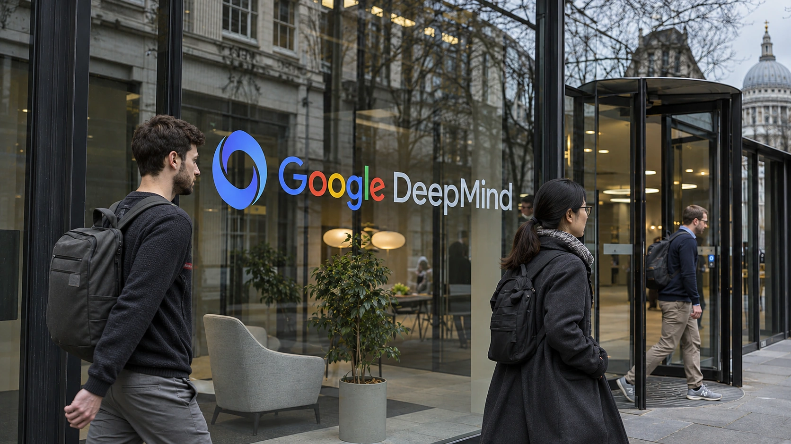

DeepMind AI Agents Cut RSA-1024 Research Costs, but Larger Gains Remain Theoretical
Google researchers report a faster reproduction of a known cryptographic computation and two mathematical advances; the findings are not evidence that modern RSA systems have been broken.

Google DeepMind researchers announced new work on legacy RSA cryptanalysis on November 6, describing how human-guided AI agents helped implement and analyze attacks on 1024-bit keys. The strongest demonstrated result was a reproduction of an earlier published modular-root computation using about 391 CPU core-years, compared with about 1,380 CPU core-years in the original experiment. That is roughly a 3.5-fold reduction in reported CPU work, not a practical compromise of a deployed financial system.
DeepMind's announcement also highlighted prospective gains of roughly 1,600 times for a particular signature-forgery scenario and roughly 30 times for the incremental cost of factoring additional keys in a batch. Both are theoretical estimates under specified assumptions. Neither headline gain was demonstrated by completing the proposed attack at full cryptographic scale.
The difference between measured results and modeled improvements is crucial. A security team reading only the largest numbers could wrongly infer that widely used encrypted connections or bitcoin wallets have suddenly become vulnerable. The papers support no such general conclusion.
What the AI agents actually completed
The completed experiment used the same known attack family and a 1024-bit mathematical benchmark previously studied by Laura Shea, Miro Haller, Adam Suhl, Nadia Heninger and Emmanuel Thomé. That earlier team published a successful signature-forgery-related computation in September. It used temporary access to a raw signing oracle, a service that produces RSA operations for inputs chosen by a caller, rather than stealing a private key.
DeepMind's AI agents redesigned implementation and execution work around the benchmark. The reported 391 CPU core-years is accumulated processor effort, not three centuries of wall-clock time. With extensive parallel computing resources, the run finished in days. The improvement therefore concerns computational efficiency and automation, and should not be described as the original discovery of the underlying 1024-bit forgery.
Human cryptographers guided the agents in coding, scheduling and checking the experiment. This was supervised research, not an autonomous breach of deployed encryption.
Two larger results on paper
A separate mathematical analysis examines RSA signature interfaces that permit callers to control part of the data submitted for signing. Certain kinds of padding can fail to add the expected security margin when a large enough part of the input is attacker-controlled. For a smaller, 32-byte digest, the researchers estimate a more difficult attack could be approximately 1,600 times cheaper under their model. The paper explicitly does not report a completed full-size computation of that case.
The second analysis concerns batch factoring. Standard RSA keys are constructed from large products of two prime numbers. Factoring many independently generated products is generally computationally expensive. The new proposal would share a costly precomputation across many targets. Under its leading-order mathematical model, each later 1024-bit target could cost substantially less than in previous comparable approaches—approximately 30 times less for the cited setup.
That number is not a measured speedup. No working 'fan factory' was built for the paper, and the upfront computational and storage demands remain major qualifications. The proposed gain also does not mean that a single randomly selected RSA key has suddenly become 30 times cheaper to factor.
What the results mean for operators
The research concerns old 1024-bit RSA keys, which US standards have long treated as inadequate for generating new digital signatures. Some legacy systems may still rely on them, particularly equipment and internal processes that are difficult to update. Operators should audit key inventories, identify devices that permit raw signing operations and plan replacements where older configurations remain active.
The attacks require specific signing access; the authors do not claim an immediate threat to ordinary RSA-2048 deployments.
For readers following AI in enterprise technology, the broader significance is how quickly supervised agents can iterate on demanding technical problems. TTN Finance has examined related enterprise AI-agent security challenges, where the important issue is the privileges a system is allowed to exercise. That principle applies here too: cryptographic access controls determine whether a theoretical technique becomes relevant to an actual deployment.
More efficient algorithms and the cost of AI computing infrastructure are distinct questions; neither proves a practical attack against every RSA key size.
What remains unproven
Both DeepMind working papers were released as research drafts rather than peer-reviewed final publications. Independent examination will determine whether their assumptions and reported efficiencies hold broadly. The implemented 1024-bit demonstration was performed on a research instance, not a production bank certificate or payment system.
Nor does the work apply directly to the transaction signatures used by bitcoin, which rely on elliptic-curve cryptography rather than RSA. Exchanges may still use RSA in unrelated server and organizational systems. Our earlier coverage of crypto security and asset-freeze procedures illustrates why technical categories should be distinguished rather than grouped into a single claim of 'broken encryption.'
AI agents shortened a demanding known computation. Larger gains remain theoretical. Security teams should assess legacy exposure, not assume a widespread breach.